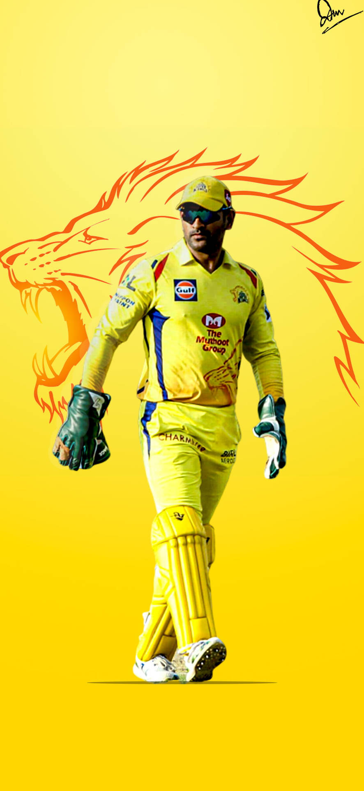
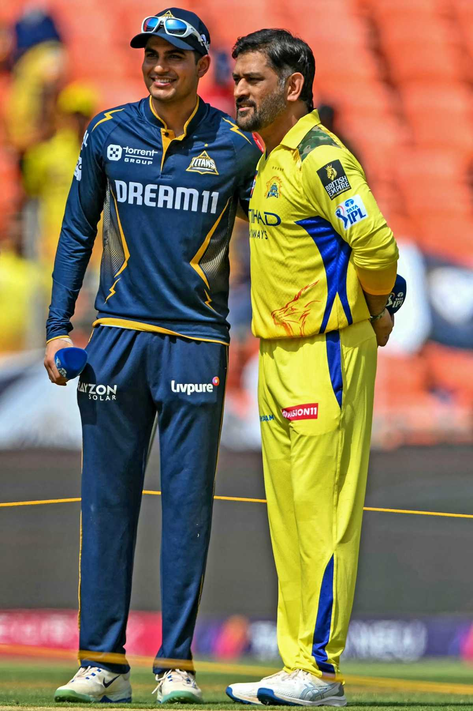

| HOME | ACHIEVEMENT | LIFE JOURNEY | GALLERY | CONTACT US |
|
  |
MS Dhoni has achieved some of the greatest milestones in cricket history. Under his captaincy, India won the 2007 ICC T20 World Cup, the 2011 ICC Cricket World Cup, and the 2013 ICC Champions Trophy, making him the only captain to win all three major ICC trophies. He also led India to become the world’s No.1 Test team for the first time in 2009. Dhoni is known as one of the best finishers in limited-overs cricket, with many match-winning innings, including his famous unbeaten 91 in the 2011 World Cup final. In the Indian Premier League (IPL), he guided the Chennai Super Kings (CSK) to multiple championship titles. His calm leadership, sharp decision-making, and consistent performance have made him one of the most successful and respected cricketers in the world. |